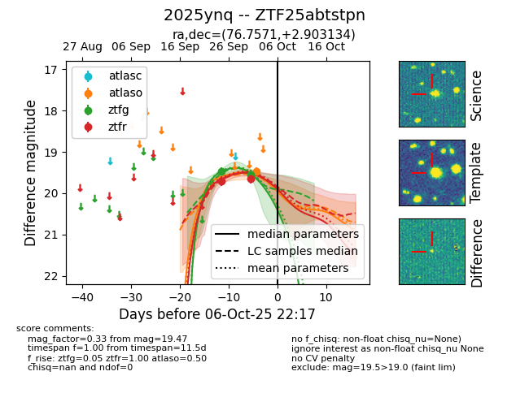
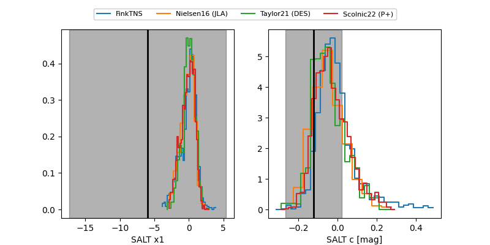

FINK: ZTF25abtstpn
Lasair: ZTF25abtstpn
ALeRCE: ZTF25abtstpn
TNS: 2025ynq
YSE: 2025ynq
ZTF25abtstpn (ztf,fink)
2025ynq (tns,yse)
equatorial (ra, dec) = (76.7571,+2.90313)
galactic (l, b) = (197.6267,-21.59088)


last atlaso=19.47, ztfg=19.55, ztfr=19.64
1 atlaso, 2 ztfg, 2 ztfr detections